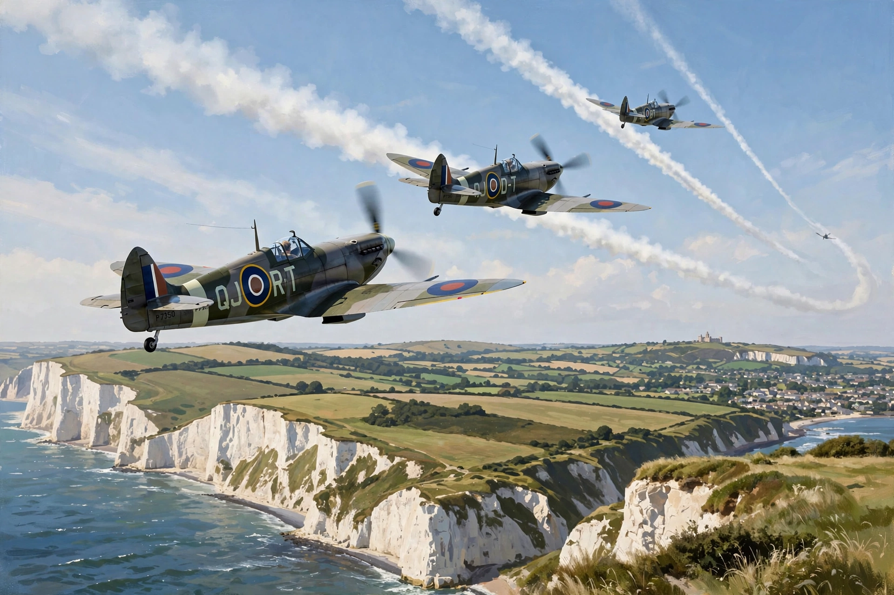

| Battle of Britain | |
|---|---|
 | |
| Date | 10 July – 31 October 1940 |
| Location | United Kingdom, primarily southern England and the English Channel |
| Result | British victory |
| Belligerents | United Kingdom (RAF Fighter Command) vs. Nazi Germany (Luftwaffe), with Italian support |
| Commanders | Hugh Dowding, Keith Park; Hermann Göring, Albert Kesselring |
The Battle of Britain was a major air campaign fought in the skies over the United Kingdom in the summer and autumn of 1940, during the Second World War. Germany's Luftwaffe sought to destroy the Royal Air Force and gain air superiority as a prelude to Operation Sea Lion, the planned invasion of Britain. Its failure was the first major defeat of Nazi Germany's military forces and a crucial turning point of the war.
After the fall of France in June 1940, Britain stood alone against Germany. The RAF's Fighter Command, under Air Chief Marshal Hugh Dowding, was organised through the world's first integrated air-defence system — the Dowding system — combining Chain Home radar stations, the Observer Corps, and centralised plotting rooms that directed squadrons of Hawker Hurricanes and Supermarine Spitfires against incoming raids.
After preliminary attacks on Channel shipping, the Luftwaffe opened its main offensive, Adlertag ("Eagle Day"), on 13 August 1940. Intense attacks on radar stations and airfields in south-east England — including Kent, the "Garden of England" — brought Fighter Command under severe strain in late August and early September. On 7 September the Luftwaffe switched to mass bombing of London, beginning the Blitz, which relieved pressure on the airfields. On 15 September, the climax of the battle, the RAF repelled two great daylight raids; two days later Hitler postponed Sea Lion indefinitely.
Winston Churchill's tribute to the aircrew — "Never in the field of human conflict was so much owed by so many to so few" — gave them their enduring name, "the Few". Battle of Britain Day is commemorated on 15 September. The victory preserved Britain as a base for the later liberation of Western Europe.